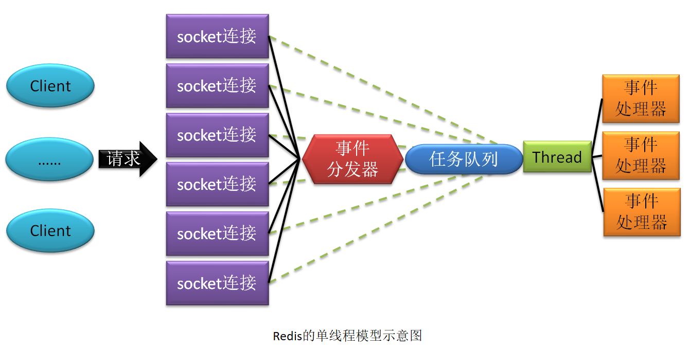
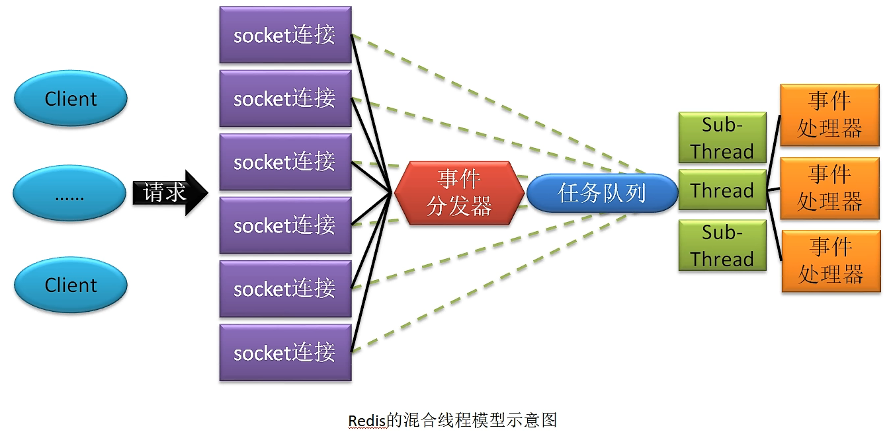
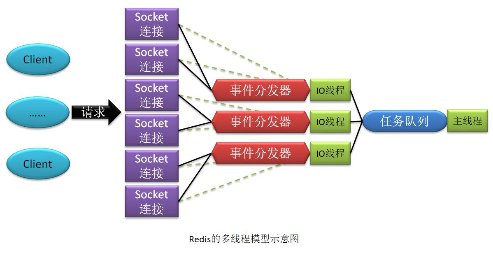

Redis7
一、Redis概述
1.1 Redis特性
-
性能极高：Redis 读的速度可以达到 11w 次/s，写的速度可以达到 8w 次/s。只所以具有这么高的性能，因为以下几点原因：
- Redis 的所有操作都是在内存中发生的。
- Redis 是用 C 语言开发的。
- Redis 源码非常精细（集性能与优雅于一身）。
-
简单稳定：Redis 源码很少。早期版本只有 2w 行左右。从 3.0 版本开始，增加了集群功能，代码变为了 5w 行左右。
- 持久化：Redis 内存中的数据可以进行持久化，其有两种方式：RDB 与 AOF。
- 高可用集群：Redis 提供了高可用的主从集群功能，可以确保系统的安全性。
- 丰富的数据类型：Redis 是一个 key-value 存储系统。支持存储的 value 类型很多，包括String(字符串)、List(链表)、Set(集合)、Zset(sorted set --有序集合)和 Hash（哈希类型）等，还有 BitMap、HyperLogLog、Geospatial 类型。
- BitMap：一般用于大数据量的二值性统计。
- HyperLogLog：其是 Hyperlog Log，用于对数据量超级庞大的日志做去重统计。
- Geospatial：地理空间，其主要用于地理位置相关的计算。
- 强大的功能：Redis 提供了数据过期功能、发布/订阅功能、简单事务功能，还支持 Lua 脚本扩展功能。
- 客户端语言广泛：Redis 提供了简单的 TCP 通信协议，编程语言可以方便地的接入 Redis。所以，有很多的开源社区、大公司等开发出了很多语言的 Redis 客户端。
- 支持 ACL 权限控制：之前的权限控制非常笨拙。从 Redis6 开始引入了 ACL 模块，可以为不同用户定制不同的用户权限。
ACL，Access Control List，访问控制列表，是一种细粒度的权限管理策略，可以针对任意用户与组进行权限控制。目前大多数 Unix 系统与 Linux 2.6 版本已经支持 ACL 了。
Zookeeper 早已支持 ACL 了。
Unix 与 Linux 系统默认使用是 UGO（User、Group、Other）权限控制策略，其是一种粗
粒度的权限管理策略。
- 支持多线程 IO 模型：Redis 之前版本采用的是单线程模型，从 6.0 版本开始支持了多线程模型。
1.2 Redis的IO模型
1.2.1 单线程模型
对于 Redis 3.0 及其以前版本，Redis 的 IO 模型采用的是纯粹的单线程模型。即所有客户端的请求全部由一个线程处理。

Redis 的单线程模型采用了多路复用技术。
对于多路复用器的多路选择算法常见的有三种：select 模型、poll 模型、epoll 模型。
- poll 模型的选择算法：采用的是轮询算法。该模型对客户端的就绪处理是有延迟的。
- epoll 模型的选择算法：采用的是回调方式。根据就绪事件发生后的处理方式的不同，又可分为 LT 模型与 ET 模型。
每个客户端若要向 Redis 提交请求，都需要与 Redis 建立一个 socket 连接，并向事件分发器注册一个事件。一旦该事件发生就表明该连接已经就绪。而一旦连接就绪，事件分发器就会感知到，然后获取客户端通过该连接发送的请求，并将由该事件分发器所绑定的这个唯一的线程来处理。如果该线程还在处理多个任务，则将该任务写入到任务队列等待线程处理。
之所以称为事件分发器，是因为它会根据不同的就绪事件，将任务交由不同的事件处理器去处理。
1.2.2 混合线程模型
从 Redis 4.0 版本开始，Redis 中就开始加入了多线程元素。处理客户端请求的仍是单线程模型，但对于一些比较耗时但又不影响对客户端的响应的操作，就由后台其它线程来处理。例如，持久化、对 AOF 的 rewrite、对失效连接的清理等。

1.2.3 多线程模型
Redis 6.0 版本，才是真正意义上的多线程模型。因为其对于客户端请求的处理采用的是多线程模型。

多线程 IO 模型中的“多线程”仅用于接受、解析客户端的请求，然后将解析出的请求写入到任务队列。而对具体任务（命令）的处理，仍是由主线程处理。这样做使得用户无需考虑线程安全问题，无需考虑事务控制，无需考虑像 LPUSH/LPOP 等命令的执行顺序问题。
1.2.4 IO模型的优缺点总结
1.2.4.1 单线程模型
-
优点：可维护性高，性能高。不存在并发读写情况，所以也就不存在执行顺序的不确定性，不存在线程切换开销，不存在死锁问题，不存在为了数据安全而进行的加锁/解锁开销。
-
缺点：性能会受到影响，且由于单线程只能使用一个处理器，所以会形成处理器浪费。
1.2.4.2 多线程模型
- 优点：其结合了多线程与单线程的优点，避开了它们的所有不足
- 缺点：该模型没有显示不足。如果非要找其不足的话就是，其并非是一个真正意义上的“多线程”，因为真正处理“任务”的线程仍是单线程。所以，其对性能也是有些影响的。